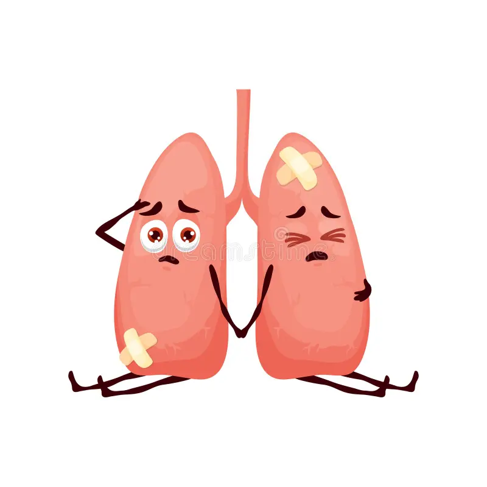

¿Qué son los virus respiratorios?
Los virus respiratorios son agentes infecciosos que afectan el sistema respiratorio, incluyendo la nariz, garganta, bronquios y pulmones.
Se transmiten principalmente a través de gotículas expulsadas al toser, estornudar o hablar, y pueden provocar desde infecciones leves hasta enfermedades graves.


¿Qué partes del cuerpo afectan?
- Nariz y cavidad nasal
- Garganta (faringe)
- Bronquios
- Pulmones
Ejemplos de virus respiratorios
Influenza (Gripe)
Provoca fiebre, tos, dolor muscular y malestar general. Es común durante el invierno.
COVID-19
Puede causar síntomas leves o graves, incluyendo dificultad respiratoria.
Virus Sincitial Respiratorio
Afecta principalmente a bebés y niños pequeños, causando bronquiolitis.
¿Cómo se pueden prevenir?
- Lavarse las manos con frecuencia
- Usar mascarilla en lugares cerrados
- Evitar el contacto con personas enfermas
- Ventilar espacios cerrados